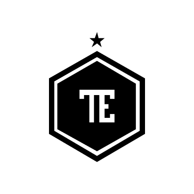
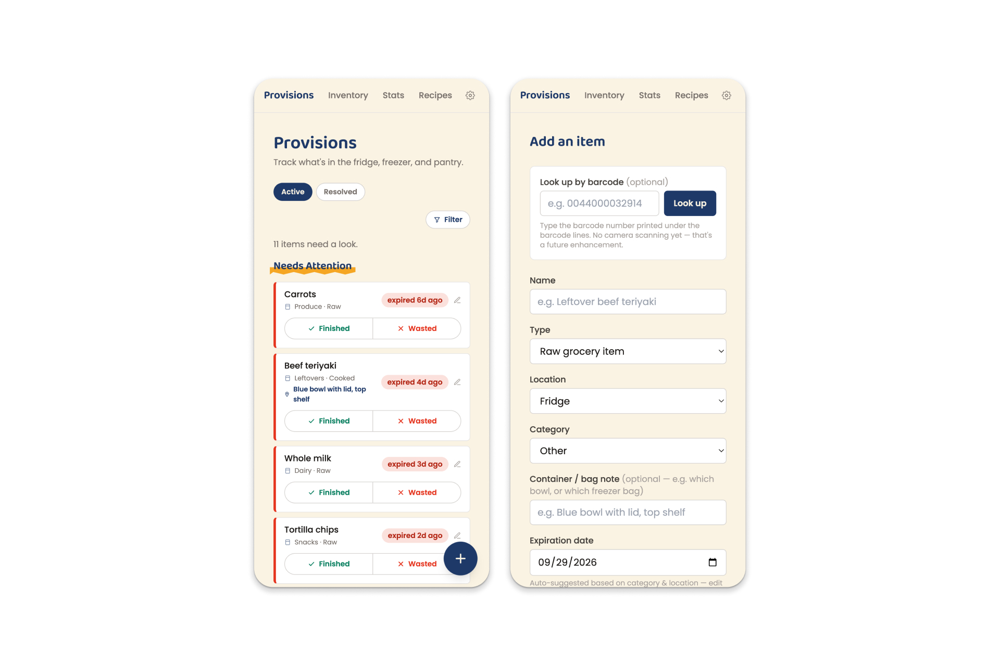
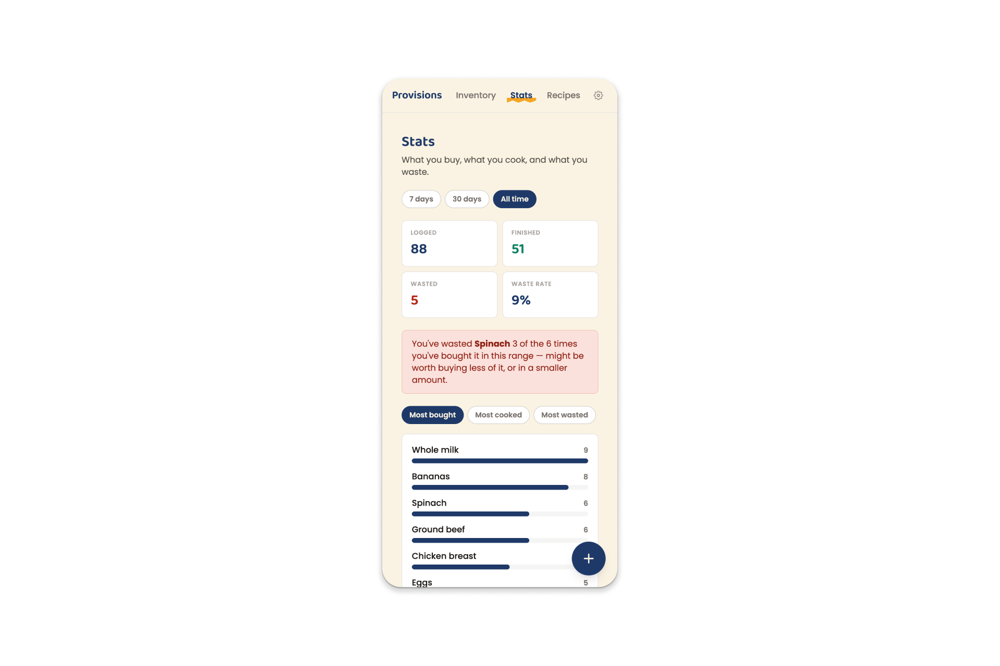

Work
 PWA Kit BOPIS
Commerce Experience
PWA Kit BOPIS
Commerce Experience
PWA Kit BOPIS
Turned one of our biggest per-customer custom builds into an out-of-the-box capability — recognized with the Commerce Cloud Q2 2025 UX All-Star award.
PWA Kit BOPIS
PWA Kit BOPIS
Turned one of our biggest per-customer custom builds into an out-of-the-box capability — recognized with the Commerce Cloud Q2 2025 UX All-Star award.
 Drop images/bopis-hero.jpg in locally to fill this
Drop images/bopis-hero.jpg in locally to fill this
The Challenge
Our research showed that BOPIS (Buy Online, Pickup In Store) functionality was a time- and resource-consuming custom build that stymied development teams. Turning it into an out-of-the-box capability was a chance to convert this into a competitive differentiator for the headless offering — but "generic" was hard to define. Builds varied widely by inventory system, and verticals like grocery vs. apparel have meaningfully different pickup flows and edge cases. The challenge was defining the 80% case without over-committing to any one customer's specifics.
What I Did
- Reviewed how BOPIS was built across the eCommerce space, not to copy existing patterns but to find where competitors converged. That convergence became the basis for what could safely be "generic."
- Developed a vision defining the key touchpoints and needs, then validated it with Customer Success against real research examples before investing further, rather than designing in isolation and finding out later it didn't hold up.
- Refined the vision based on that feedback, building in how Customer Success and Support needed to handle individual customer stories. The design had to work for the team supporting it, not just the shopper.
- Defined the vision through to Store Locator/Selection and PLP/PDP, the components that ultimately shipped, before a team reorg moved execution to another designer.
Reflection
We were never going to cover 100% of every use case, so the real skill was covering the most common cases while deliberately ruling out vertical-specific idiosyncrasies — like inventory routing rules, which weren't baked in right away since headless customers could be using different inventory providers — rather than trying to solve for all of them upfront.
 Drop images/bopis-detail.jpg in locally to fill this
Drop images/bopis-detail.jpg in locally to fill this
 Hybrid Auth Settings
Design Systems Migration
Hybrid Auth Settings
Design Systems Migration
Hybrid Authentication Settings
Reconciled a legacy edit/save pattern with Lightning Design System conventions — and made the call to hold off on full modernization to protect consistency mid-migration.
Hybrid Auth Settings
Hybrid Authentication Settings
Reconciled a legacy edit/save pattern with Lightning Design System conventions — and made the call to hold off on full modernization to protect consistency mid-migration.
 Drop images/hybrid-auth-hero.jpg in locally to fill this
Drop images/hybrid-auth-hero.jpg in locally to fill this
The Challenge
Salesforce Commerce B2C Business Manager was mid-transition to Lightning Design System, and this settings page was one of the pieces still running the old pattern language — a table-based layout with checkmarks mid-row and an edit-then-save interaction model. Lightning favors direct-save interactions, and some legacy patterns didn't translate directly, so the challenge was reconciling a fundamentally different interaction model while staying as close as possible to standard Lightning patterns.
What I Did
- Took in the product ask and produced low-fidelity concepts of several potential patterns, including private options behind a popup, radio-button-driven progressive disclosure, and read-only states.
- Defined key patterns with the lead designer overseeing overall pattern transition across the product, translating concepts into Lightning components consistent with Commerce Cloud's system.
- Synced with the Content Experience team for cross-team consistency.
- Built in Figma and iterated with engineering as they uncovered constraints migrating functionality to the new tech stack.
Reflection
We debated modernizing the interaction pattern immediately — replacing the legacy edit/save toggle with Lightning's direct-save convention — but held off. With dozens of other settings pages still mid-migration, having this one page behave differently from its neighbors risked users second-guessing whether their changes had actually saved, so consistency across the system won over local polish. In hindsight, the cutover might have been better sequenced as a deliberate, global rollout plan across all settings pages, rather than left to each page's migration timeline to decide independently.
 Drop images/hybrid-auth-detail.jpg in locally to fill this
Drop images/hybrid-auth-detail.jpg in locally to fill this

Provisions
Personal Project
Provisions
Designed and built a fridge/pantry tracker from problem to shipped product, making the call to design for triage over data entry, and for behavior change over a waste tally.

ProvisionsProvisions
Designed and built a fridge/pantry tracker from problem to shipped product, making the call to design for triage over data entry, and for behavior change over a waste tally.

Drop images/provisions-hero.jpg in locally to fill thisThe Challenge
I kept throwing away food I'd lost track of: cooked, forgotten, gone bad. Existing inventory apps didn't fit how my kitchen actually works: meat bought in bulk and split across freezer containers, items moving between raw and cooked states, nothing labeled the way an app expects. So instead of adapting to someone else's tool, I built something specific to how my family actually uses a kitchen. A naive "item + expiration date" model breaks down fast against that reality. The design challenge was holding our real mess without asking the user to do the modeling themselves.
What I Did
- Designed the entry and display model around a small set of states (raw/cooked, split quantities, freeform location) rather than a rigid schema, so messy real cases stayed fast to log.
- Led the home screen with what needs attention today, sorted by urgency, instead of a flat inventory list. The priority was "what do I deal with right now," not a complete-looking dashboard.
- Designed the stats view to surface specific, recurring waste patterns rather than just totals, aimed at changing purchasing decisions, not just reporting on them.
- Added a recipe suggestion feature scoped to what's already in inventory, to close the loop between noticing what's about to expire and actually using it.
Reflection
No PRD, no engineering constraints, no customer ask. I made every call myself, including what counted as MVP. Visually, I drew on the hand-painted signs that hung in my family's grocery store growing up, a way to bring my own history into something I built with today's skills. The harder design call wasn't the data model, though. It was resisting a more impressive-looking stats view in favor of one blunt, specific callout. It read as a step down in polish, but it's the version that's actually changed what we buy.

Drop images/provisions-detail.jpg in locally to fill this